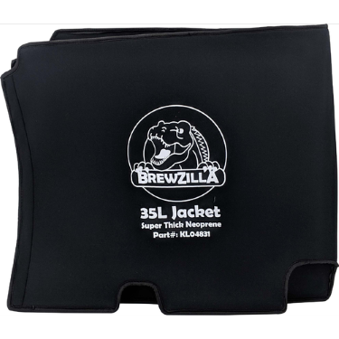

Equipment
This page documents all of my brewing equipment.
DigiBoil Electric Kettle - 35L/9.25G (110V)

Neoprene Jacket for BrewZilla 3.1.1 & DigiBoil - 35L

Immersion Wort Chiller - 25 ft. x 3/8 in.
Sink Faucet Adapter - Stainless

Stainless Steel Brewing Spoon - 21 in.

Thermometer
Not sure which one.
Airlock - 3 Piece

Rubber Stopper - #10 With Hole
I think this is the right one...:

Fermonster Carboy - 6 gal. With Spigot

Fermometer - Adhesive Thermometer

Triple Scale Hydrometer

Hydrometer Jar - 14 in.

Plastic Fermenting Bucket - 6 gal. (With Spigot)

High Temp Silicone Tubing - 3/8 in.